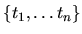
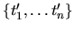
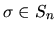
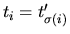
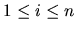
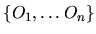
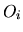
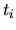
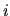

This section describes the messages accepted by the FE for defining workspace menus. We need a number of preliminaries first.
Given a selection in the workspace, the front end provides the end user with a (possibly hierarchical) menu of actions which are appropriate to that selection.
A given action has a signature, which is a bag of typeIDs . Let the bag of the typeIDs of the selected objects be . The action cannot be appropriate to the selection unless there is a permutation  such that  for .
In addition, the action may not be appropriate unless some condition on the selected objects is met. The information needed to check these conditions was stored in the FE by the SM via the properties argument of the create_ message for each object.
If an action is appropriate, the FE must post a menu item for it, and send a corresponding message to the SM if that item is chosen. The text of the menu item will need to refer to various of the selected objects by name, and the message will refer to them by objectID. Now suppose the signature of the action is , and that the selected objects can be indexed  so that the typeID of  is . We may consider an index to be a formal parameter of the action, and to be the corresponding actual parameter.
The SM may refer to the name of the th actual parameter in Hot text with the symbol ${name}. It may refer to the objectID with the symbol ${OID}.
At last, we have the syntax of a menu definition message:
#1 menu signature itemGroups
A menu is one of the symbols checkin, tools. It indicates under which toplevel workspace menu the given menu items are to be posted.
A signature has the form {typeID*}. The typeIDs are sorted in increasing order. In this case typeID is not a keyword identifier.
An itemGroups has the form {itemGroup+}. There are no keyword arguments at this level or below.
An itemGroup has the form {condition {item+}}.
A condition is any string which can be accepted by the Tcl procedure expr. It is Hot text. It may contain substrings ``${OID}''. Note that expr accepts the operators &&, ||, !, ==, !=, which have the same meaning and precedence as in C. It allows parentheses. It represents true and false by 1 and 0.
An item has one the forms realItem, s, or {c itemText {realItem+}}. The s item is a menu item separator, and the {c...} item is a cascaded menu.
A realItem has the form {itemText action message}.
An itemText is Hot text, delimited by {}'s, and may
contain substrings ``${name}''. Example:
{Is ${name1} trivial in [_name_ [_value_ parent(${OID1})]]?}.
An action is the name of one of a number of predefined procedures (documented in §2.3.2) which is to be called before the message is sent to the SM. Such procedures usually have the side-effect of defining new variables which can be referenced in the message body. The action may be {}.
A message is Hot text delimited by {}'s, and may contain substrings ``${OID}'' and any other variable references which are valid as a result of the action. If the message is empty, i.e. {}, the menu item is posted but disabled.